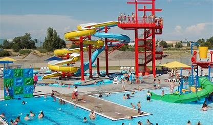
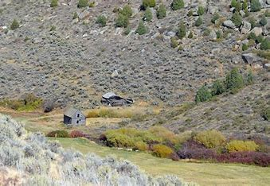

Cress Creek

Along the scenic South Fork of the Snake River, the 1-mile Cress Creek Nature Trail interprets life in the area as it is now and as it was long ago. The trail climbs through sagebrush-grass communities, over juniper-covered slopes, and along a lush perennial creek. When skies are clear, prepare for an expansive view of the Snake River, volcanoes and surrounding farmland.
The nature trail is self-guided, with interpretive signs along the way. And across the street from Cress Creek Nature Trail there is a trail around the Snake River where you can fish with a license
Rexburg Rapids
The Rexburg Rapids, your premier destination for aquatic excitement and family fun! Dive into the thrill of twisting water slides, float along the lazy river, and make a splash in our exhilarating water attractions. At Rexburg Rapids, we've seamlessly combined the joy of water play, the relaxation of a lazy river, and the thrill of exciting slides, all in one fantastic water park. Immerse yourself in the refreshing waves, soak up the sun on our spacious deck, and create unforgettable memories with family and friends. Whether you're seeking a refreshing day out, a lively family adventure, or a place to beat the summer heat, Rexburg Rapids is where aquatic fun knows no bounds. Slide, float, and make a splash. Rexburg Rapids.
Sand Dunes

Some friends and I rented sandboards, hammocks and sleeping bags from the ORC and spent a night on the dunes. We hiked out until we found some trees, sandboarded for a while, then built a fire and made hot cider. With wind chill, that night got below 0 degrees, so I’m glad I brought an extra blanket! The sunrise was spectacular, and as my first time on dunes, the whole experience felt magical. I would go back in an instant!
Altogether, I spent ~30$, including the pizza I bought us.
Moody Medows
Moody Meadow in Eastern Idaho is a less-known but wonderful destination for nature enthusiasts and adventurers. It offers a serene camping experience, allowing visitors to stay up to five days amidst its tranquil wilderness. While enjoying the rustic charm of the area, campers are reminded to pack out their trash and prepare for a lack of facilities, including toilets. The meadow's charm is further enhanced by its huckleberry groves, free for picking if one is quick enough to beat the local bears. On that note, carrying bear deterrents is wise for safety, and bear spray is conveniently available for rent from the BYU-Idaho Outdoor Resource Center or purchase at local outdoor shops. This blend of natural beauty and mindful wilderness etiquette makes Moody Meadow an enticing and responsibly enjoyable retreat.